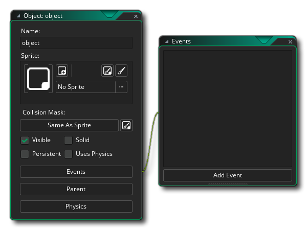
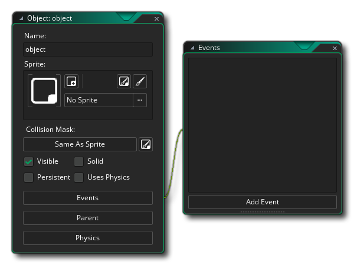
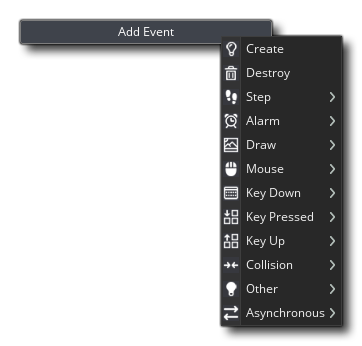
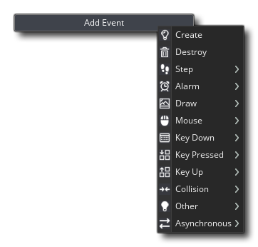
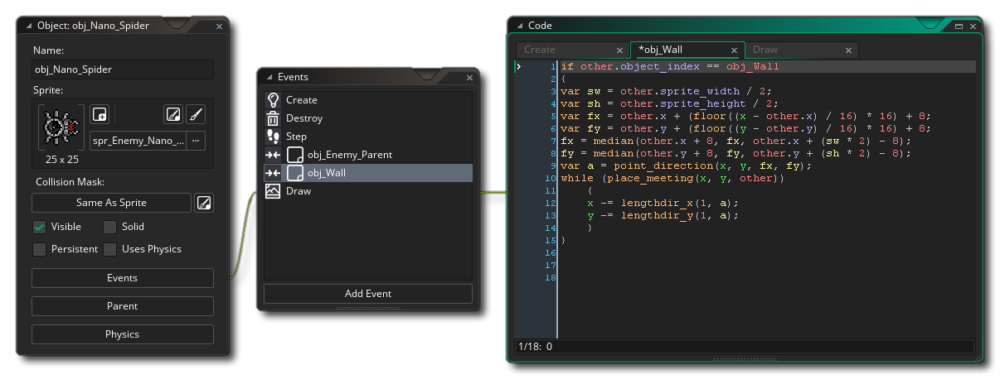

With the resources you have seen so far you can add some nice images and sounds to the game resource tree, but they don't do anything in the game itself yet! For that we need the most important resource of GameMaker Studio 2, the Object resource. Objects are a special resource that we use to control aspects of a game and to do specific things. Most of the time they have a sprite associated with them so that you can see them in the game rooms, but sometimes they are used as a "behind the scenes" controller to do things related to the user or for timing, etc... They can be given behaviours and they can react to certain events as well as to each other, and most of the things you see in a game are based on objects and their interactions.
To create a new object resource, it's the same as for every
other resource and you simply right click  on the
Objects resource folder and selecting Create. 
on the
Objects resource folder and selecting Create. 
This is the object editor window and shows the current
properties, and the first thing you should do is name the object,
again using a prefix like "obj_" or some other identifier. In
general, or an object to draw anything and register collisions with
instances of other objects it needs to have a sprite which is added
using the  button. This will open the Asset
Explorer where you can select the sprite to use:
button. This will open the Asset
Explorer where you can select the sprite to use: 
If you do not have an appropriate sprite yet, you can click
 on the New Sprite button
on the New Sprite button
 to create a new sprite resource and
edit it as you wish, just as if you had created the resource
through the standard resource create options, only now it will
automatically be assigned to the object that you had open when you
started to create it. Once you select a resource you can also click
to create a new sprite resource and
edit it as you wish, just as if you had created the resource
through the standard resource create options, only now it will
automatically be assigned to the object that you had open when you
started to create it. Once you select a resource you can also click
 on the Edit Sprite
on the Edit Sprite  or
Edit Image
or
Edit Image  buttons to edit either the image
itself or the sprite resource. This can be faster than first
finding the resource in the list of resources and then indicating
you want to edit it.
buttons to edit either the image
itself or the sprite resource. This can be faster than first
finding the resource in the list of resources and then indicating
you want to edit it.
Once selected the sprite you can change a few other properties like whether it should be visible or not - for example - or what kind of collision mask it should have. For simple games you probably don't need to change anything here and can now go on to add Events to the object. Basically, events are discreet moments in the game loop where things are made to happen based on what you have programmed for them. GameMaker Studio 2 works with cycles of these events - from the moment a room is started to the moment it is finished there is a game loop running where every step (a step is a moment in game time, governed by the game speed setting) a series of events are run, and you can choose to place code or DnD™ actions in your instances that respond to these events.
To add an event you click  on the Add Event button:

on the Add Event button:

Above you can see all the different Event Categories, some of which contain other sub-categories. We won't go through all the events here, but we will cover the five most important ones briefly:

|
Create Event | This event happens when an instance of the object is first created, and is the very first thing that happens within an instance that has been placed in the room through the room editor when a room is entered. This means that this event is the ideal place to initialize variables, start Timelines, set paths etc... and do anything else that generally only needs to be done once or only when an instance first appears in the room. |

|
Step Event | GameMaker Studio 2 splits game time into steps with the game speed defining how many of these steps there are supposed to be per second. A step, is basically the loop that runs constantly with all the events being checked and triggered as necessary while the game runs, so as you can imagine, the Step Event is an event that is checked every single step of the game while the instance exists. Note that the Step Event category has three sub-categories to "fine tune" timing within the instance, but in general you will use the main Step Event most. |

|
Collision Event | Obviously when making a game, it is very important that you know when two (or more) instances of an object have collided, and for that we have the collision event. This is an event that you place in an object and then specify against which other object you should be checking for collisions. Once you have added the event and chosen the object to check for you can add code or DnD™ to resolve the collision. |

|
Draw Event | There are multiple different Draw Events within the draw event category, but the one you use most is the one at the top simply called "Draw". This general draw event will be caled, like the step event, every game frame, but it works in two different ways. The first is when you don't add any code or DnD™ to the event, in which case it will "default draw" the sprite assigned, using any transforms that have been applied elsewhere in the object (like to change its size or alpha blending). The second way it works is when you add code or DnD™ to it. Adding something to the event tells GameMaker Studio 2 "I want to control what you draw for instances of this object" and it completely over-rides the default draw. This means that you can have an object with a sprite assigned, then set the draw event to draw text and the sprite will not be drawn as you have not told GameMaker Studio 2 to draw it, although the text will be. |

|
Destroy Event | This event is the very last event to be executed when an instance is destroyed. It is often overlooked when adding behaviours to objects, but it can be very useful - for example, for creating explosion or particle effects when an enemy is killed, or for re-spawning a new instance of the object in another part of the room, or even for adding points onto a score. |
For further information on all the different events, please see here.
Adding an event will open either the code editor or the Drag and Drop editor, depending what type of project you are creating. In this window you can now add the code or actions that you wish to be performed each time that event is triggered within the game loop. A typical object with events and code will look like this: 
Using DnD™ or code to program the game is outside of the scope of this basic Quick Start guide, but you can find more information from the two pages given below:
And you can find a full explanation of all the different parts of the Object Editor here:
The next part of this guide will look at the Room Editor, where everything you've learned so far comes together to make your projects into games...